Le tir de précision et les contrats
Les épreuves ISSF et FFTir, la variante carton (entrée en cible, centrage, cible floue) et les contrats SQ Air pour s’entraîner avec un objectif chiffré.
Entrée en cible, centrage, cible floue
En tir de précision, la SQ Air propose les épreuves ISSF et FFTir (pistolet 10 m, pistolet standard 10 m, pistolet vitesse 3/7…) et une « variante carton » avec des visuels d'entraînement.
L'entrée en cible
Maîtriser la descente du bras, du dessus de la cible jusqu'à la zone de visée, guidon centré dans le cran. Un cône gris guide la trajectoire.
| Couleur | Consigne | Séries | Réussi si |
|---|---|---|---|
| Blanc Jaune | Bras levé, organes de visée au-dessus de la cible. Descendre doucement, guidon au milieu du cran, ralentir en traversant le visuel pour arriver lentement dans la zone de visée. | 2 × 10 plombs | Guidon dans le cran pendant la descente, vitesse contrôlée ; pour l’entraîneur, un geste de plus en plus régulier. |
| Orange Vert | Monter jusqu’à un repère choisi, corriger le centrage, puis descendre dans le cône gris. Cône large (60°) au début, à réduire dès que le geste est maîtrisé. Estimer sa marge de blanc. | 3 × 10 plombs | Rester dans le cône jusqu’à la zone de visée. Si la descente suit le bord du cône, se replacer pour descendre dans son axe ; un SCATT aide à voir la trajectoire. |
| Bleu Marron | Descente régulière. Commencer à 50°, puis retirer 10° après chaque série réussie (10 plombs sur 10 dans le cône). | 3 × 10 plombs | Rester dans le cône jusqu’à la zone de visée, guidon dans le cran. |
Variante : les mêmes exercices, en entrant par le bas de la cible.
Entrée en cible
Améliorer son entrée en cible
Le centrage
Le centrage : zone de visée
Carton de centrage pistolet
Carton de centrage carabine
La cible floue
Elle se choisit dans le tir de précision, menu « Choisissez une variante de carton », parmi d'autres variantes comme les deux bandes ou l'éclairage asymétrique.
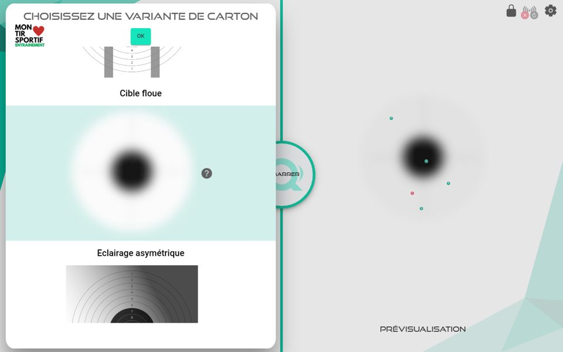
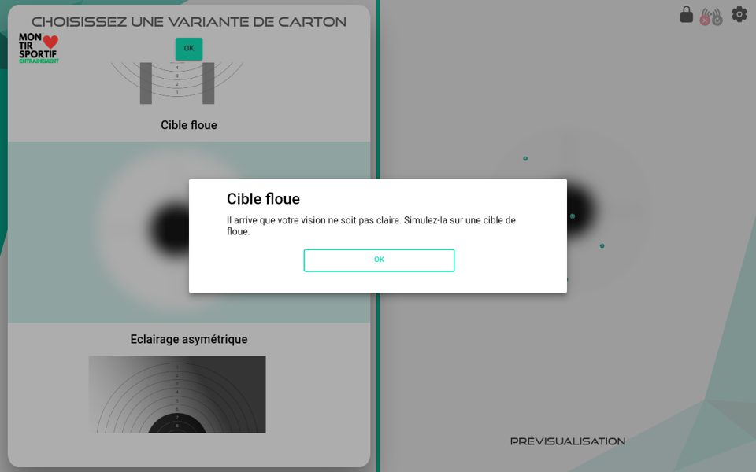
Tirer quand la vue se brouille
- Principe
- Le visuel s’affiche flou, pour simuler une vision qui n’est pas claire : fatigue, larmes, lumière, verres embués.
- Ce qu’on travaille
- Rester sur un guidon net et faire confiance à sa visée, même quand la cible ne l’est pas. C’est d’ailleurs la règle : guidon net, cible floue.
- Réussi si
- Le groupement reste proche de celui obtenu sur une cible nette.
La cible floue
Les contrats SQ Air
Des défis à se fixer en tir de précision. Ils se lancent depuis la discipline Tir de précision (« Démarrer »).
La série la plus longue
- Principe
- Rester le plus longtemps possible au-dessus d’un score plancher. On travaille la concentration : éviter le mauvais coup qui coûte des points en match.
- 1. Sa moyenne
- Score habituel ÷ nombre de tirs. Exemple : 510 points sur 60 tirs = 8,5 par tir.
- 2. Son plancher
- Un peu en dessous ou proche de la moyenne, par exemple 8.
- 3. La série
- Commencer par 10 coups, puis allonger peu à peu.
Le contrat Points
Le défi : atteindre 5 ou 10 points en le moins de coups possible. Selon la valeur de l'impact, chaque coup rapporte des points… ou en retire.
| Points | Facile | Moyen | Difficile |
|---|---|---|---|
| +2 | 10,9 à 8,4 | 10,9 à 9,4 | 10,9 à 10,4 |
| +1 | 8,3 à 8,0 | 9,3 à 9,0 | 10,3 à 10,0 |
| 0 | 7,9 à 7,4 | 8,9 à 8,4 | 9,9 à 9,4 |
| −1 | 7,3 à 7,0 | 8,3 à 8,0 | 9,3 à 9,0 |
| −2 | 6,9 et moins | 7,9 et moins | 8,9 et moins |
Lancer le contrat
- Tir de précision › Discipline › onglet Entraînement › rubrique Contrats › Points. Le « ? » affiche la règle.
- Carton : Pistolet 10 m ; variante de carton : aucune.
- La clé à côté de la discipline ouvre les réglages ; puis Démarrer.
Régler la difficulté
- Le curseur « Facile / Difficile » : on règle la taille du cercle vert sur la taille moyenne de son groupement ; la cible calcule alors les bons seuils.
- « Personnaliser » : on fixe soi-même le score minimum (−10 par défaut) et les seuils des tranches +2, +1, 0 et −1.
- On peut ajouter le réglage à ses favoris ou restaurer les paramètres d'usine.
- Si l'on change de carton après coup, il faut refaire le réglage.
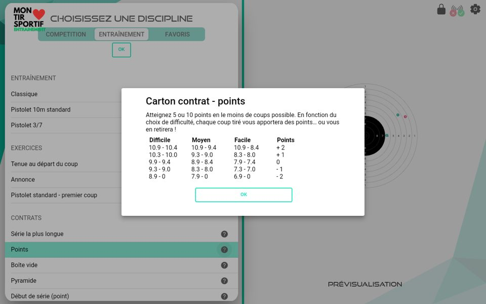
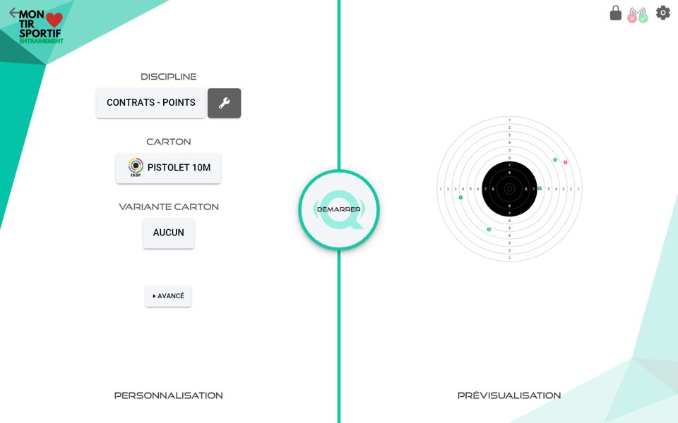

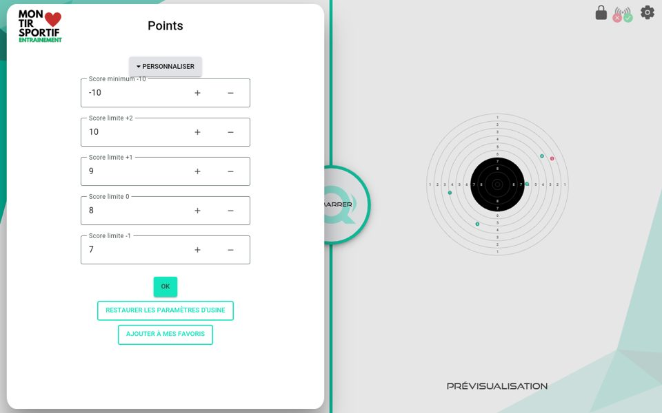

Le contrat Boîte vide
Le défi : on remplit une boîte de plombs, un par objectif à atteindre, puis on la vide en le moins de coups possible. Chaque coup qui atteint le score choisi retire un plomb ; le nombre de plombs restants s'affiche sur la boîte.
Lancer le contrat
- Tir de précision › Discipline › onglet Entraînement › Contrats › Boîte vide. Le « ? » affiche la règle.
- Carton : Pistolet 10 m ; variante de carton : aucune.
- La clé ouvre les réglages ; puis Démarrer.
Les réglages
- Score minimum : la valeur qu'un coup doit atteindre pour retirer un plomb de la boîte.
- Nombre de plombs : combien de fois il faut atteindre cet objectif (10 par défaut).
- Pénalités (à activer) : en dessous d'un second score minimum, des plombs sont remis dans la boîte. Exemple : sous 8, on rajoute 1 plomb.
- Ou le curseur Facile / Difficile, calé sur la taille de son groupement, comme pour le contrat Points.

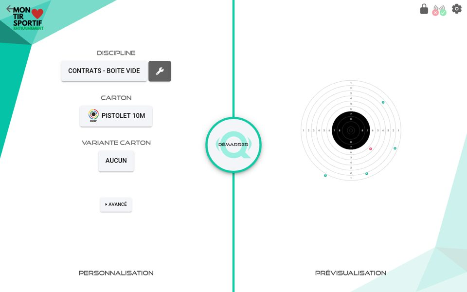
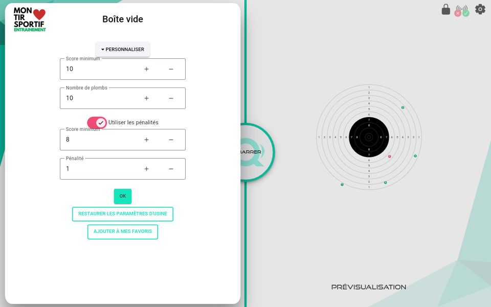


Le contrat Pyramide
Le défi : vider tous les étages d'une pyramide en atteignant les scores qui y sont inscrits. Chaque étage est au moins aussi exigeant que le précédent. On se met ainsi au défi soit à chaque coup, soit sur un bilan de plusieurs coups.
Lancer le contrat
- Tir de précision › Discipline › onglet Entraînement › Contrats › Pyramide. Le « ? » affiche la règle.
- Carton : Pistolet 10 m ; variante de carton : aucune.
- La clé ouvre les réglages ; puis Démarrer.
Les réglages
- Hauteur de la pyramide : le nombre d'étages (3 ou 5 sur les captures).
- Le score de chaque étage : par exemple 7, 8, 9, 10 puis 10,2 pour une pyramide de 5 étages.
- Mode « Classique » ou « De bas en haut » : « de bas en haut » augmente l'exigence au fil du contrat.
- Ou le curseur Facile / Difficile, calé sur la taille de son groupement.

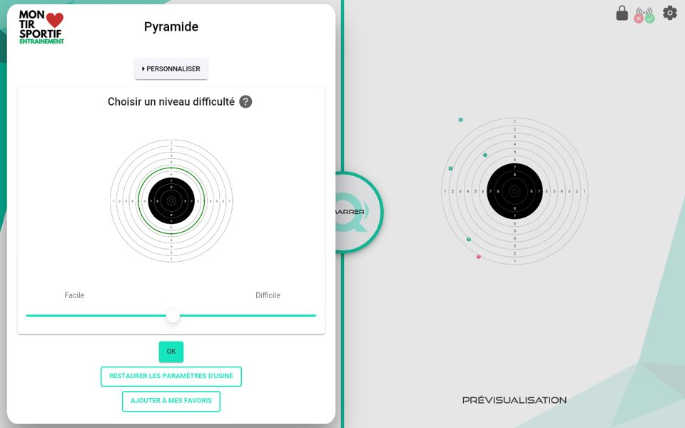

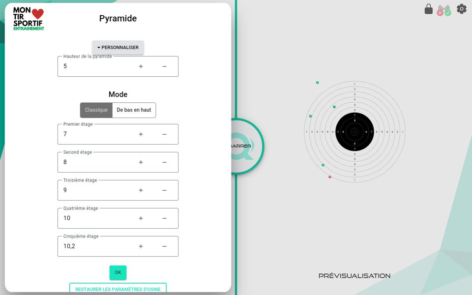
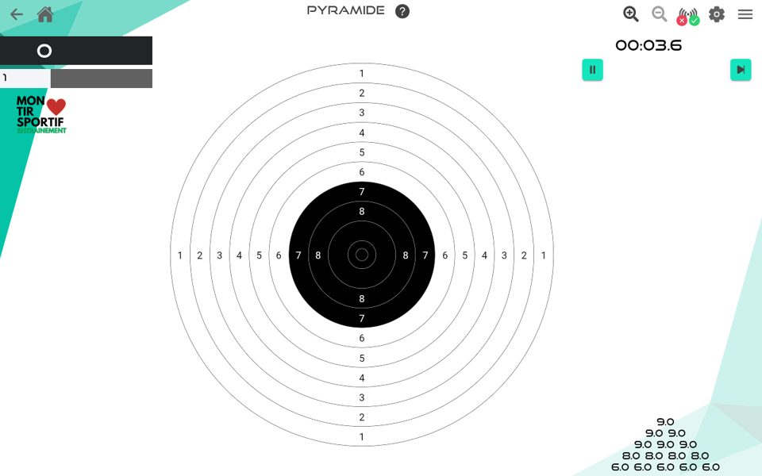
Le contrat Pyramide en vidéo
Le contrat Début de série (point)
Le défi : bien commencer un match. On se fixe deux objectifs : un score total pour la série, et un point minimum à atteindre plusieurs fois dans les premiers coups. Exemple donné par la SQ Air : tirer 95/100, avec au moins trois 10 dans les cinq premiers tirs.
Lancer le contrat
- Tir de précision › Discipline › onglet Entraînement › Contrats › Début de série (point). Le « ? » affiche la règle.
- Carton : Pistolet 10 m ; variante de carton : aucune.
- La clé ouvre les réglages ; puis Démarrer. Le contrat se tire en mode match.
Les réglages
- Objectif de la série : le score total visé (100 sur les captures).
- Début de la série, score minimum : le point à atteindre en début de série (6 ou 10 sur les captures). Sur l'écran des objectifs, cela donne par exemple « 3 × 10,0 / 5 » : trois coups à 10 ou plus dans les cinq premiers.
- Utilisation des décimales : pour compter le point minimum au dixième.
- Ou le curseur Facile / Difficile, calé sur la taille de son groupement.
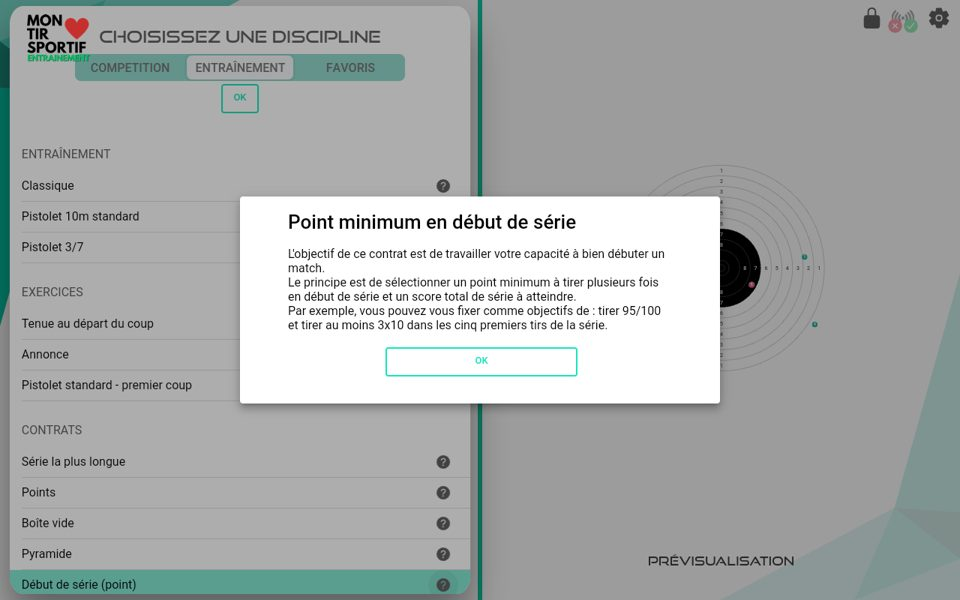
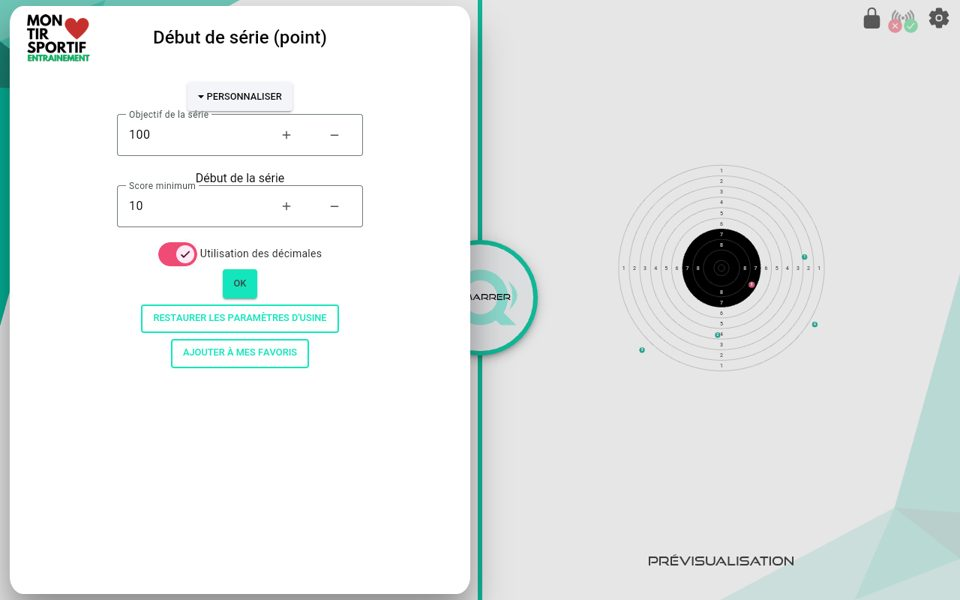
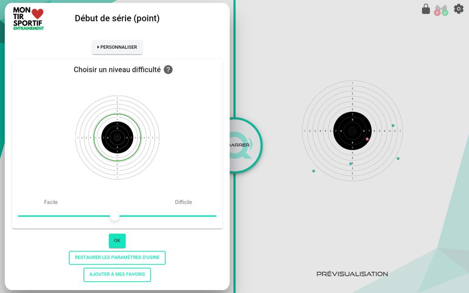


Les autres contrats
À compléter.
À compléter.
MonTirSportif – https://sq.montirsportif.com/tir-de-precision.html